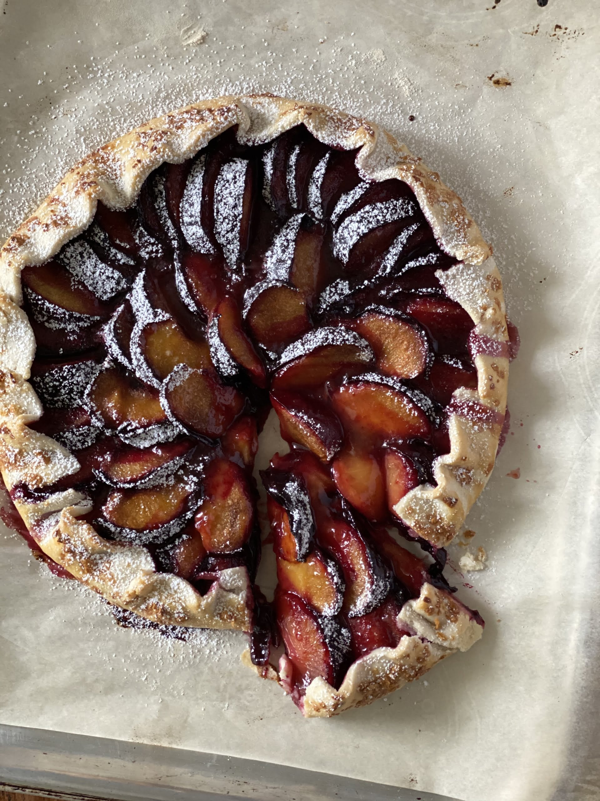
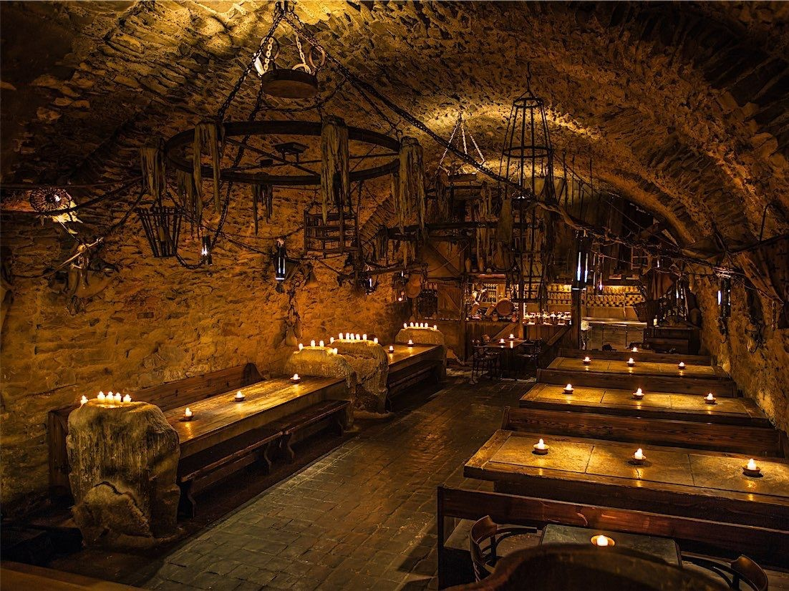

Food
The Crow's Talon Tavern
This tavern is owned and operated by a former Shepherd who was blinded while serving the city. This tavern has the best food in all the city. You have to try their elk roast. This dish is made from elk locally hunted out of the Ashenwood and seasoned with a rich blend of herbs and spices harvested from local gardens in the city. If you've got more of a sweet tooth, you could check out the Ashen Plum Pie. This pie uses ashen plums, the namesake of the Ashenwood. Their dark gray exterior makes the filling a dark rich purple. The pies are locally made and have a rich tart taste. The owner keeps the recipe close to his chest, so you can't get this delicous pie anywhere else.
The Nightingale Inn
While it is an inn, the Nightingale Inn also has a restaurant. They are famous for their perpetual stew. This pot of stew is always cooking on a pot in the lobby. New ingredients are added as the residents eat the stew, but the pot is never fully emptied. This stew is incredibly flavorful and it is a new exeprience every time you come back. It is also famous for it's Ashen Lemonade. This lemonade uses freshly squeezed lemons. The secret to this lemoade is that the water is infused with mint leaves and pine needles to give it a unique taste you can't get anywhere else in Nocturne.